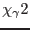

XMM-Newton Science Analysis System
bkgfit (ebkgmap-2.9) [xmmsas_20170112_1337-16.0.0]
- 1
-
P. R. Bevington.
Data Reduction and Error Analysis for the Physical Sciences.
McGraw-Hill, 1 edition, 1969.
- 2
-
K. J. Mighell.
Parameter estimation in astronomy with poisson-distributed data. i.
the  statistic.
Ap. J., 518:380-393, 1999.
XMM-Newton SOC/SSC -- 2017-01-12